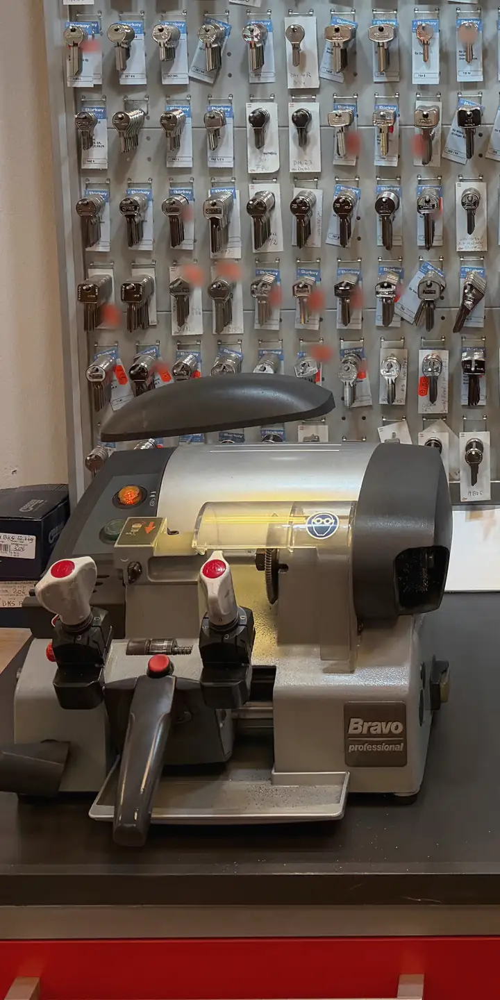

Schlüssel nachmachen in Aachen
Ihren Ersatzschlüssel fräsen wir direkt im Laden im Kaufland Rothe Erde, nach dem Original oder, wenn der Schlüssel abgebrochen ist, nach dem Bruchstück.
Laden Mo–Sa 9–19 Uhr, sonntags geschlossen.
Notdienst täglich ab 8 Uhr.

Welche Schlüssel wir nachmachen
Schlüssel ist nicht gleich Schlüssel, und jede Art wird etwas anders angefertigt. Deshalb sehen wir uns Ihren zuerst genau an, bevor wir den Rohling auswählen.
- Zylinderschlüssel für Haustür und Wohnung, Büro, Garage oder Gartentor, mit einseitigem oder doppeltem Bart. Ihr vorhandener Schlüssel dient dabei als Vorlage.
- Buntbart- und Chubb-Schlüssel, wie man sie von älteren Schlössern und Zimmertüren kennt. Hier feilen wir den Rohling zuerst glatt, fräsen dann Bart und Einschnitte und arbeiten nach, bis die Kopie dem Original entspricht.
- Tresorschlüssel. Bei ihnen entscheidet jeder Millimeter, ob der Schlüssel schließt, entsprechend sorgfältig gehen wir vor.
Abgebrochen oder beschädigt: nachmachen nach dem Bruchstück
Ist Ihr Schlüssel abgebrochen oder verbogen, bringen Sie bitte alle Teile mit, die Sie noch haben. An den Stücken lässt sich der Bart ablesen, und danach entsteht der neue Schlüssel. Das klappt bei Zylinderschlüsseln ebenso wie bei beschädigten Tresorschlüsseln.
Steckt die abgebrochene Spitze noch im Schloss und Sie kommen nicht mehr in die Wohnung, rufen Sie uns an. Was dann passiert, lesen Sie unter Türöffnung und Notdienst.
So läuft es im Laden
Vorbeikommen
Einen Termin brauchen Sie nicht. Kommen Sie montags bis samstags von 9 bis 19 Uhr mit dem Schlüssel zu uns ins Kaufland.
Rohling wählen
An unserer Wand hängen Rohlinge für sehr viele Schlüsselformen. Wir vergleichen Profil und Länge mit Ihrem Schlüssel und nehmen den, der passt.
Fräsen
Original und Rohling werden in die Schlüsselfräsmaschine gespannt. Die Maschine überträgt die Einschnitte, danach wird die Kopie nachgearbeitet, bis sie sauber ins Schloss gleitet.
Zu Hause ausprobieren
Probieren Sie den neuen Schlüssel in Ruhe an Ihrer Tür. Hakt er, bringen Sie ihn noch einmal vorbei, dann sehen wir ihn uns an.
Den Preis sagen wir Ihnen, bevor wir mit dem Fräsen anfangen.
Schlüssel mit Sicherungskarte
Zu manchen Sicherheitszylindern gehört eine Sicherungskarte. Schlüssel für solche Zylinder fertigt der Hersteller, und zwar nur gegen Vorlage der Karte. So bekommt niemand ohne Ihr Wissen eine Kopie. Wie Sie zu einem weiteren Schlüssel kommen, erklären wir Ihnen gern im Laden.
Haben Sie einen Schlüssel verloren und fragen sich, ob ein neuer reicht? Die Übersicht Nachmachen oder Zylinder tauschen? auf unserer Startseite hilft bei der Entscheidung.
Häufige Fragen
Brauche ich einen Termin, um einen Schlüssel nachmachen zu lassen?
Nein. Kommen Sie montags bis samstags von 9 bis 19 Uhr einfach mit dem Schlüssel in den Laden im Kaufland.
Kann ich auch von einer Kopie einen weiteren Schlüssel machen lassen?
Ja, wir fertigen auch nach einem nachgemachten Schlüssel eine weitere Kopie an. Haben Sie das Original noch, bringen Sie besser dieses mit, denn es ist die genaueste Vorlage.
Mein Schlüssel ist abgebrochen. Was soll ich mitbringen?
Alle Teile, die Sie noch haben. Nach dem Bruchstück fräsen wir Ihnen einen neuen Schlüssel. Kommen Sie wegen der abgebrochenen Spitze nicht mehr ins Haus, rufen Sie an: 0241 56 52 95 94.
Machen Sie auch Tresorschlüssel nach?
Ja, auch dann, wenn der vorhandene Tresorschlüssel beschädigt ist. Bringen Sie ihn dafür mit in den Laden.
Rufen Sie an oder kommen Sie vorbei.
Laden Mo–Sa 9–19 Uhr, sonntags geschlossen. Notdienst täglich ab 8 Uhr.Es ist Uhr.
im Kaufland Aachen
Breslauer Straße 35
52068 Aachen
Laden Mo–Sa 9–19 Uhr, sonntags geschlossen. Notdienst So–Do 8–24 Uhr, Fr/Sa 8–2 Uhr. Bezahlen können Sie bar oder mit EC-Karte.
Route in Google Maps öffnen